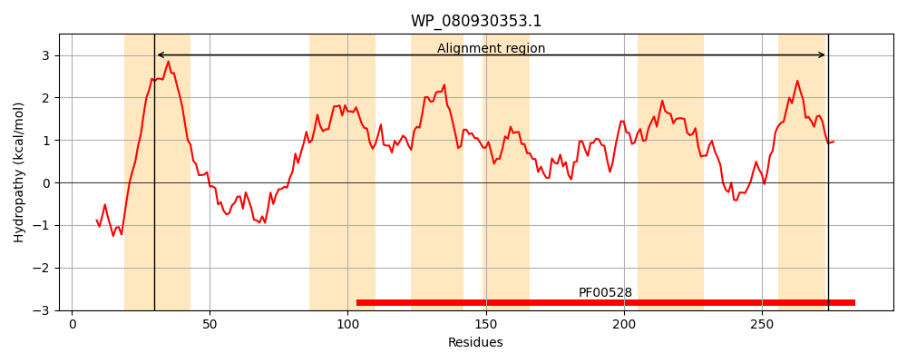
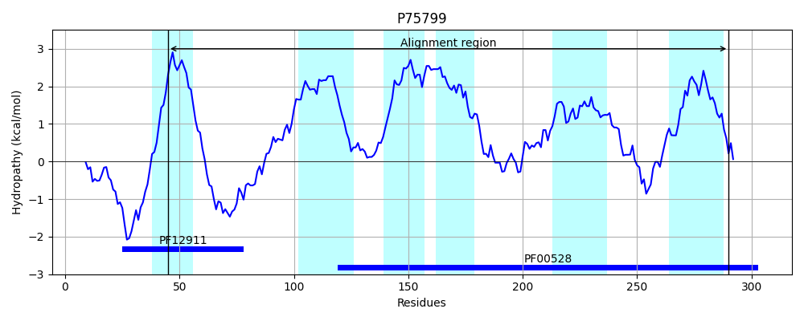
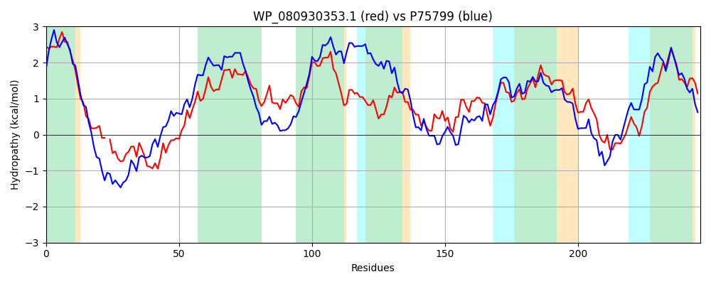

Hit Accession: P75799
Hit TCID: 3.A.1.5.11
Hit Description: gnl|BL_ORD_ID|11412 gnl|TC-DB|P75799|3.A.1.5.11 Hypothetical ABC transporter permease protein yliD - Escherichia coli.
Mach Len: 246
e:0.000000
Query TMS Count : 6
Hit TMS Count: 6
TMS-Overlap Score: 5.700000
Predicted Substrates:CHEBI:5437;glutathione
BLAST Alignment:
Score: 527 , Bit scores: 207 bits, E-value: 8.0e-66, Alignment length: 246, Percentage identity: 43
Query: 30 LLVLLLVVAVFFPSLFTPYTPEQ-MDFSAILQPPDLRHWFGTDQLGRDVFTRVVYGTSLSLSIGVGATLIASAGGIVLGTLAGLAPRAVRQLLVRLLDIMLAFPDLLLALLAITVLGRGPENTLLAVGLAGIAGYARLVRAQVLQVRLSGYVQHAVALGEPPMVIILRHIVPNTLRPLLVLATVGIGYSILSASALSFLGLGVTPPTAEWGALLSEGRNFLDSAPWVSLLPASVVALSVIAITLLG 274
L V+LL+V F PY E D+ + P L+HWFG D LGRD+F+RV+ G +SL+ GV A I +A G +LG LAG +L++R+ D++ AFP +LLA+ + VLG G N ++AV + I +ARLVR L ++ +++ A ++G M ++LRHI+P T+ ++V T+ IG SI+SA++LSFLGLG PPT EWGA+L+E R + AP V++ PA + L+V+A LLG
Sbjct: 45 LFVILLIVVAIFARWIAPYDAENYFDYDNLNNGPSLQHWFGVDSLGRDIFSRVLVGAQISLAAGVFAVFIGAAIGTLLGLLAGYYEGWWDRLIMRICDVLFAFPGILLAIAVVAVLGSGIANVIIAVAIFSIPAFARLVRGNTLVLKQQTFIESARSIGASDMTVLLRHILPGTVSSIVVFFTMRIGTSIISAASLSFLGLGAQPPTPEWGAMLNEARADMVIAPHVAVFPALAIFLTVLAFNLLG 290 | Protein Hydropathy Plots: |
|---|
|  |  |
Pairwise Alignment-Hydropathy Plot:
|
|---|
|  |